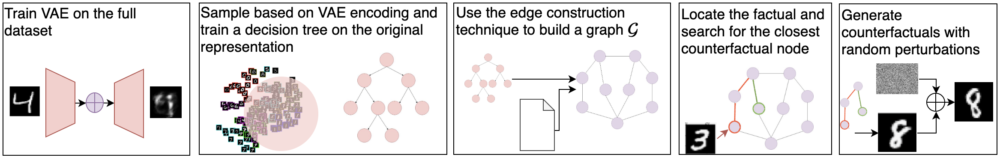
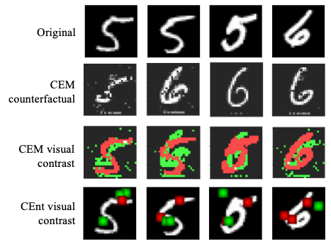
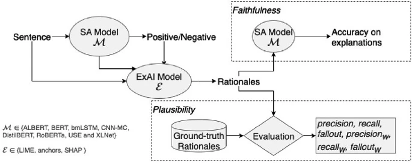
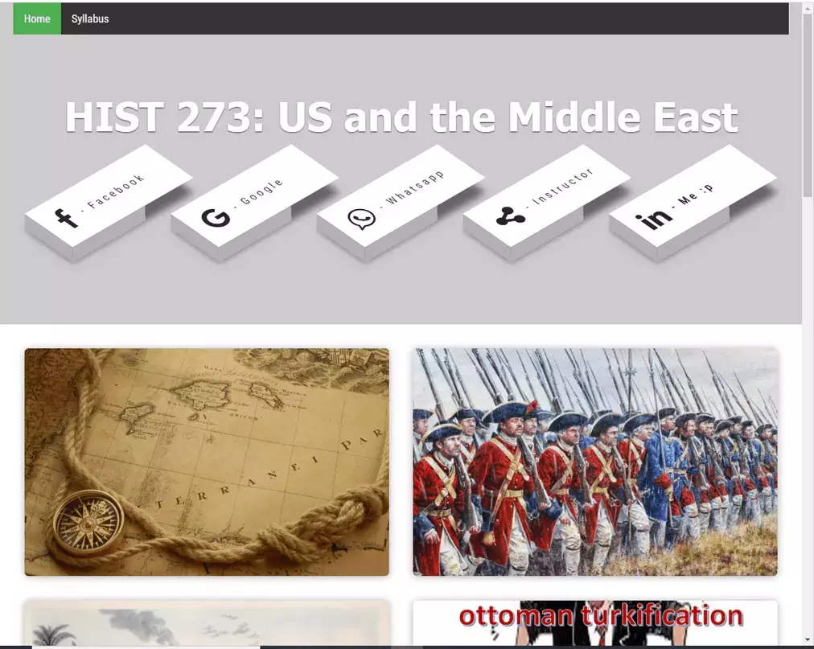
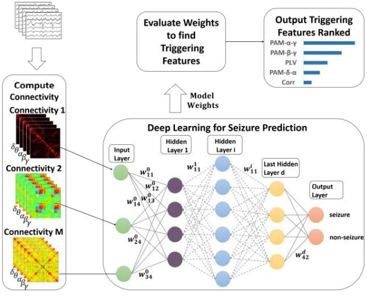
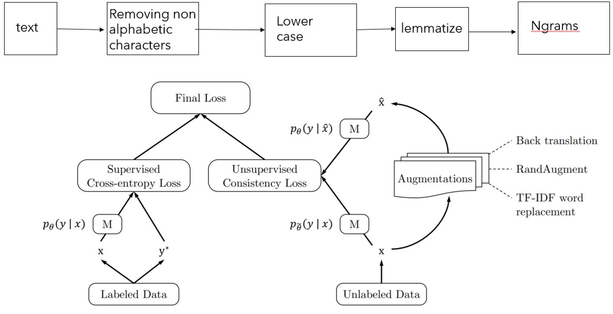

Machine learning researcher & engineer
Mohamad Mansour
I work on explainable AI, reinforcement learning, NLP and computer vision.
Now at Whish Money, working on internal AI projects.
Selected work
-
Internal AI projects
Internal, so there’s nothing to link to.
-
CEnt: An Entropy-based Model-agnostic Explainability Framework to Contrast Classifiers’ Decisions
Explains a classifier’s decision by generating feasible feature tweaks that would change it.
Keywords: deep learning, explainable AI, contrastive AI, counterfactual prediction, PyTorch, Python

Fig. 1 The CEnt pipeline, from VAE to counterfactuals. 
Fig. 2 Visual contrast on handwritten digits: CEnt against CEM. -
On the Evaluation of the Plausibility and Faithfulness of Sentiment Analysis Explanations
Metrics for judging the explanations of sentiment analysis models: whether the extracted “rationales” faithfully explain the prediction, and how well explainability methods agree with human judgment on a home-grown dataset.
Keywords: deep learning, explainable AI, faithfulness, PyTorch, Python

Fig. 3 Evaluating explanations for faithfulness and plausibility. -
Navigating Agent
Room navigation for embodied agents in Habitat, comparing combinations of reinforcement learning algorithms and training methods.
Keywords: reinforcement learning, computer vision, metacognition, PyTorch, Python, multiprocessing

Fig. 4 The Habitat point-goal navigation task, via aihabitat.org. -
Course Interactive Website
During Covid-19, finding one specific lecture recording meant a lot of searching. I built this site so my classmates and I could find things faster.
Keywords: interactive website design, HTML, CSS, JavaScript

Fig. 5 The course site’s home page. -
Explainable Model for EEG Seizure Detection
An explainable model for detecting seizures from EEG, to help diagnose epilepsy. It also ranks the features that trigger a prediction.
Keywords: deep learning, explainable AI, feature extraction, TensorFlow, Python

Fig. 6 From connectivity features to ranked seizure triggers. -
Extracting Insights
Classifying reviews and extracting insights from them, using unsupervised data augmentation.
Keywords: natural language processing, unsupervised data augmentation, Python, Keras, scikit-learn, NLTK

Fig. 7 Review preprocessing and unsupervised data augmentation.